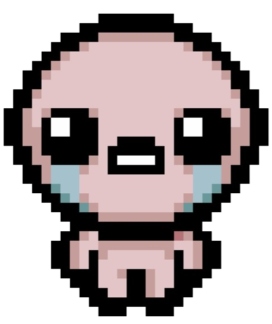
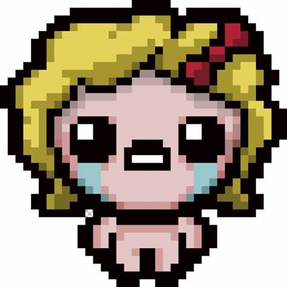
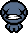

Lista de desbloqueables con cada personaje en TBOI
Isaac
- Cuchillo de Mamá
- El D20
- Cabeza de Isaac
- Lágrimas de Isaac
- Cartel de Desaparecido
- Bebé Perdido
- Bebé Tira-Pedos
- D1
Magdalena
- Eucaristía
- Incensario
- Pureza
- Dulce de Corazón
- Cruz Celta
- Bebé Colorido
- Glifo del Equilibrio
- Corazón Asqueroso
Cain
- Bolsa de Centavos
- Bolsa de Bombas
- Ojo de Caín
- D12
- Mal de Ojo
- Bolsa de Bolsas
- Ojo de Guppy
- Una Libra de Carne
 Judas
Judas
- Cuerno Curvo
- La Lengua de Judas
- Sombra de Judas
- Redención
- Ojo de Belial
- Aceldama
- Traición
- La Guillotina
???
- The D6
- Forget Me Now
- Fate
- ???'s Only Friend
- King Baby
- Meconium
- Blue Baby
- Cracked Dice
 Eve
Eve
- Daga de Sacrificio
- Pata del Ave de Eva
- Labial Negro
- Rímel de Eva
- Athame
- Pluma Negra
- Hoja sin Filo
- Orbe Roto
 Azazel
Azazel
- El Clavo
- La Biblia Satánica
- Cola de Demonio
- Abaddón
- Fauces del Vacío
- Lilith
- Bebé Sorbos
- Corona del Diablo
 The Lost
The Lost
- Corazón de Isaac
- La Mente
- El Cuerpo
- El Alma
- El D100
- Deidad
- Carta Sagrada
- Moneda Perdida de Papá
 Keeper
Keeper
- Costilla de Codicia
- Bolsillos Profundos
- Karma
- Monedas Pegajosas
- Moneda Doblada
- Ojo de Codicia
- Bolsa de Keeper
- Caja de Keeper
 Apollyon
Apollyon
- Vacío
- Runa Negra
- Langosta de Guerra
- Langosta de Pestilencia
- Langosta de Hambruna
- Langosta de Muerte
- Langosta de Conquista
- Fundidora